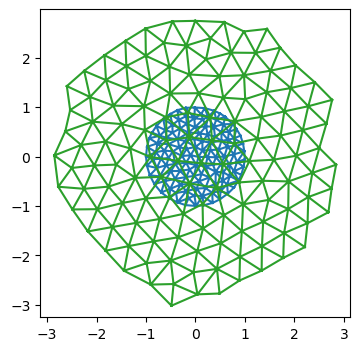

import numpy as np
import matplotlib.pyplot as plt
import copy
from tqdm.notebook import tqdmSimulation test case - optimize mesh to make triangles equilateral
Let’s start with a simple test case to see triangulax in action. The goal is to move the vertices \(\mathbf{v}_i\) of a triangulation so that all triangle edge lengths are as close to some \(\ell_0\) as possible. We specify a pseudo-energy \(E=\sum_{ij} (|\mathbf{v}_i-\mathbf{v}_j| - \ell_0)^2\), and then minimize it using the JAX-provided gradients w.r.t the vertex positions.
This defines the “forward pass” of our “dynamical” model. In a second step, we can meta-optimize over the model parameters (here \(\ell_0\)), to make the dynamics return some desired shape.
JAX-compatible scientific computing libraries - useful in future steps
import diffrax # ODE solvers
import lineax # linear solvers
import optimistix # optimisation (scientific-computing style, e.g. conjugate gradient)
import optax # optimisation (ML-style, e.g. ADAM)import jax
import jax.numpy as jnpjax.config.update("jax_enable_x64", True)
jax.config.update("jax_debug_nans", True)
jax.config.update('jax_log_compiles', False)import diffrax
import equinox as eqx
# equinox has automated "filtering" of JAX-transforms. So we can work with objects which are not just pytrees of arrays
# (like neural networks) and appy jit, vmap etcfrom jaxtyping import Float
from typing import Tuple
import dataclasses
import functools# import previously defined modules
from triangulax import trigonometry as trg
from triangulax import mesh as msh
from triangulax.triangular import TriMesh
from triangulax.mesh import HeMesh, GeomMesh
from triangulax import linops as linLoad example mesh
mesh = TriMesh.read_obj("test_meshes/disk.obj")
hemesh = HeMesh.from_triangles(mesh.vertices.shape[0], mesh.faces)
geommesh = GeomMesh(*hemesh.n_items, vertices=mesh.vertices)
hemeshWarning: readOBJ() ignored non-comment line 3:
o flat_tri_ecmcHeMesh(N_V=131, N_HE=708, N_F=224)fig = plt.figure(figsize=(4, 4))
plt.triplot(*geommesh.vertices.T, mesh.faces)
plt.axis("equal");
Forward pass - minimize energy
We write the energy_function using a geommesh as an argument. This is overkill for present purposes ince only the vertex positions matter, but is useful to test the machinery. For more complicated simulations, we will want to use GeomMesh as a wrapper for the various arrays.
def get_lengths(vertices: Float[jax.Array, "n_vertices 2"], hemesh: msh.HeMesh) -> Float[jax.Array, "n_hes 2"]:
return jnp.linalg.norm(vertices[hemesh.orig]-vertices[hemesh.dest], axis=-1)
@jax.jit
def energy_function(geommesh: GeomMesh, hemesh: HeMesh, ell_0: float=1):
edge_lengths = get_lengths(geommesh.vertices, hemesh)
edge_energy = jnp.mean((edge_lengths/ell_0-1)**2) # this way, term is "auto-normalized"
# let's add a term for the triangle areas. Use the oriented area to penalize invalid mesh configurations
a_0 = (np.sqrt(3)/4) * ell_0**2 # area of equilateral triangle
tri_area = jax.vmap(trg.get_oriented_triangle_area)(*geommesh.vertices[hemesh.faces.T])
area_energy = jnp.mean((tri_area/a_0-1)**2)
#jax.debug.print("E_l: {E_l}, E_a: {E_a}", E_l=edge_energy, E_a=area_energy)
# this is how you can print inside a JITed-function
return edge_energy + area_energyval, grad = jax.value_and_grad(energy_function)(geommesh, hemesh) # computing value and gradient of the energy
val, grad, grad.vertices.shape # the gradient is another GeomMesh. 1.60519339(Array(1.60519339, dtype=float64),
GeomMesh(D=2,N_V=131, N_HE=708, N_F=224),
(131, 2))connectivity_grad = jax.grad(energy_function, argnums=1, allow_int=True)(geommesh, hemesh)
# we can even compute the gradient w.r.t to the connectivity matrix. It is also a HeMesh
connectivity_grad, connectivity_grad.dest[0] # whatever that means(HeMesh(N_V=131, N_HE=708, N_F=224), np.void((b'',), dtype=[('float0', 'V')]))Energy optimization
Let’s follow the patterns for writing a simulation time-stepping loop described in notebook 02.
# time-stepping function
@jax.jit
def make_step(geommesh: GeomMesh, hemesh: HeMesh,
current_time: Float[jax.Array, ""], next_time: Float[jax.Array, ""], ell_0: float = 1):
loss, grad = jax.value_and_grad(energy_function)(geommesh, hemesh, ell_0=ell_0)
updated_vertices = geommesh.vertices - (next_time-current_time)*grad.vertices
geommesh = dataclasses.replace(geommesh, vertices=updated_vertices)
return (geommesh, hemesh), loss # explicitly return the hemesh - may need to be updated by flips!# simulation timesteps
step_size = 0.02
N_steps = 20000
timepoints = step_size * jnp.arange(N_steps)
# parameters of the energy
ell_0 = 0.5
# inital condition
init = ((geommesh, hemesh), timepoints[0])
# scanning function - applied at each time-step
def scan_function(carry, next_time: jax.Array):
(geommesh, hemesh), current_time = carry
(geommesh, hemesh), loss = make_step(geommesh, hemesh, current_time, next_time, ell_0=ell_0)
return ((geommesh, hemesh), next_time), loss # log the loss/energy# run the simulation
((geommesh_optimized, hemesh_optimized), _), loss = jax.lax.scan(scan_function, init, timepoints)fig = plt.figure(figsize=(4, 3))
plt.plot(loss)
fig = plt.figure(figsize=(4, 4))
plt.triplot(*geommesh.vertices.T, hemesh.faces)
plt.triplot(*geommesh_optimized.vertices.T, hemesh_optimized.faces)
plt.axis("equal");
Using an ODE solver - diffrax
Above, we implemented “gradient descent” for the pseudo-energy, or, equivalently, a basic forward-Euler scheme for the ODE \(\partial_t \mathbf{v}_i = - \nabla_{\mathbf{v}_i} E\). For more complicated models, and to minimize coding effort, it makes sense to use a pre-made ODE solver instead. The diffrax library implements ODE and SDE solvers in JAX and is compatible with autodiff (you can differentiate through the solver), since it was designed for neural differential equations.
For “adiabatic” dynamics, which involve mimizing an energy at every timestep, we can use the “optimistix” library.
The below is based on the Stepping through a solver tutorial in diffrax. The reason we want to step through the solver one-by-one is to carry out T1s (in future simulations).
# define the RHS for the ODE solver
@jax.jit
def vector_field(t, y, args):
return jax.tree_util.tree_map(lambda x: -1*x, jax.grad(energy_function)(y, *args))
term = diffrax.ODETerm(vector_field)
# define time parameters and initial condition
dt = 0.05
t0 = 0.0
t1 = 1000.0
step_times = jnp.arange(t0, t1, dt)
y0 = geommesh
args = (hemesh, ell_0)
# initialize the solver
solver = diffrax.Tsit5()
y = y0
state = solver.init(term, t0, t0+dt, y0, args)# scan through the solve
def scan_fun(carry, t):
state, y, tprev = carry
y, _, _, state, _ = solver.step(term, tprev, t, y, args, state, made_jump=False)
return (state, y, t), None
init = (state, y0, t0)
(state, y, t), _ = jax.lax.scan(scan_fun, init, step_times[1:])fig = plt.figure(figsize=(4, 4))
plt.triplot(*y0.vertices.T, hemesh.faces)
plt.triplot(*y.vertices.T, hemesh.faces)
plt.axis("equal");
Meta-training
One use case for JAX is to differentiate through a scientific simulation, allowing one to optimize the simulation parameters towards some some desired behavior. For example, we may wish to find a triangulation dynamics that creates some target shape.
As a toy example, let’s take the above “dynamics” which minimizes the pseudo-energy to make all triangles equilateral. It depends on the parameter \(\ell_0\). Relaxation of the pseudo-energy for some number of steps defines our “forward pass”. Let’s try to optimize \(\ell_0\) so that the tissue, at the end of the energy relaxation, has some target size (of course, a contrived problem, since we know the solution from the start).
First, we wrap our dynamical model as an eqx.Module, so we can optimize it just like a neural net.
class RelaxationDynamics(eqx.Module):
ell_0: jax.Array
step_size : float = eqx.field(static=True)
N_steps : int = eqx.field(static=True)
def __call__(self, initial_geommesh: GeomMesh, initial_hemesh: HeMesh) -> Tuple[GeomMesh, HeMesh]:
init = ((initial_geommesh, initial_hemesh), 0)
def scan_fun(i, carry):
(geommesh, hemesh), _ = carry
return make_step(geommesh, hemesh, ell_0=self.ell_0,
current_time=i*self.step_size, next_time=(i+1)*self.step_size)
(geommesh_optimized, hemesh_optimized), _ = jax.lax.fori_loop(0, N_steps, scan_fun, init, unroll=None)
return geommesh_optimized, hemesh_optimizedDefine Meta-training loss
Now we need to define our meta-training loss. In this case, it’s just the deviation of the average edge length from the total. Note how the meta-loss is distinct from the pseudo-energy we minimize during the forward pass.
Let’s use the equinox library to handle our problem, in anticipation of more complex ones down the line.
# define the meta-loss
def meta_loss(model: RelaxationDynamics, initial_geommesh: GeomMesh, initial_hemesh: HeMesh, meta_ell0: float) -> float:
geommesh_optimized, hemesh_optimized = model(initial_geommesh, initial_hemesh)
lengths = get_lengths(geommesh_optimized.vertices, hemesh_optimized)
return jnp.mean((lengths/meta_ell0-1)**2)# initialize the model, and test the meta loss
initial_ell0 = 0.4
meta_ell0 = 0.3
model_initial = RelaxationDynamics(ell_0=jnp.array([initial_ell0]), step_size=step_size, N_steps=N_steps)
model_initial(geommesh, hemesh), meta_loss(model_initial, geommesh, hemesh, meta_ell0=meta_ell0)((GeomMesh(D=2,N_V=131, N_HE=708, N_F=224),
HeMesh(N_V=131, N_HE=708, N_F=224)),
Array(0.13074658, dtype=float64))Batching
To evaluate the loss, we want to average over a bunch of initial conditions. These are analogous to batches in a normal ML problem.
## Let's create a bunch of meshes with different initial positions and see if we can batch over them using vmap
key = jax.random.key(0)
sigma = 0.02
N_batch = 3
batch_geom = []
batch_he = []
for i in range(N_batch):
key, subkey = jax.random.split(key)
random_noise = jax.random.normal(subkey, shape=geommesh.vertices.shape)
batch_geom.append(dataclasses.replace(geommesh, vertices=geommesh.vertices+sigma*random_noise))
batch_he.append(copy.copy(hemesh))
# we use a jax.tree.map to "push" the list axis into the underlying arrays.
# the result is a single mesh object with batch axes
batch_he_array = msh.tree_stack(batch_he)
batch_geom_array = msh.tree_stack(batch_geom)
batch_geom_array, batch_geom_array.vertices.shape(GeomMesh(D=2,N_V=131, N_HE=708, N_F=224), (3, 131, 2))# We can apply the simulation and upack the results into a list
batch_geom_array_out, batch_he_array_out = jax.vmap(model_initial)(batch_geom_array, batch_he_array)
batch_geom_out = msh.tree_unstack(batch_geom_array_out)
batch_he_out = msh.tree_unstack(batch_he_array_out)# still works
i = 2
fig = plt.figure(figsize=(4, 4))
plt.triplot(*batch_geom[i].vertices.T, batch_he[i].faces)
plt.triplot(*batch_geom_out[i].vertices.T, batch_he_out[i].faces)
plt.axis("equal");
Compute the batched loss
# This is the right way to vmap the loss
jax.vmap(meta_loss, in_axes=(None, 0, 0, None))(model_initial, batch_geom_array, batch_he_array, 0.8)Array([0.24862355, 0.24863542, 0.24863226], dtype=float64)# check against non-vmapped version. pretty similar, floating point errors likely at origin of differences
[meta_loss(model_initial, batch_geom_out[i], batch_he_out[i], 0.8) for i in range(3)][Array(0.24848931, dtype=float64),
Array(0.24848805, dtype=float64),
Array(0.2484898, dtype=float64)]Meta-optimization
Now we are in a position to “optiomize” our model parameter ell_0. Based on equinox CNN tutorial.
def batched_meta_loss(model, batch_geom_array, batch_he_array, meta_ell0):
return jnp.mean(jax.vmap(meta_loss, in_axes=(None, 0,0, None))(model, batch_geom_array, batch_he_array, meta_ell0))
batched_meta_loss_jit = jax.jit(batched_meta_loss)# hyper-parameters for the outer learning step.
LEARNING_RATE = 1e-2
LEARNING_STEPS = 20
print_every = 2
step_size = 0.01
N_steps = 20000
META_ELL0 = 0.4
initial_ell0 = 0.2
model_initial = RelaxationDynamics(ell_0=jnp.array([initial_ell0]), step_size=step_size, N_steps=N_steps)loss, grads = eqx.filter_jit(eqx.filter_value_and_grad(batched_meta_loss))(model_initial,
batch_geom_array, batch_he_array, META_ELL0)
loss, grads, grads.ell_0(Array(0.24848878, dtype=float64),
RelaxationDynamics(ell_0=f64[1], step_size=0.01, N_steps=20000),
Array([-2.48070057], dtype=float64))Forward and reverse mode autodiff
Since we are differentiation w.r.t. a small number of parameters (justy 1: \(\ell_0\)), we can use forward mode automatic differentiation for increased efficiency. This may be the case more generally: if we want to learn “translationally invariant” models, where the parameters for all cells are equal, the parameter count we want to differentiate by may be small. Forward mode autodiff is also somewhat more “forgiving” when it comes to control flow.
See: https://docs.jax.dev/en/latest/notebooks/autodiff_cookbook.html
@eqx.filter_jit
def outer_optimizer_step(model: RelaxationDynamics,
batch_geom: GeomMesh, batch_he: HeMesh) -> Tuple[RelaxationDynamics, float]:
# compute loss and grad on batch
loss, grads = eqx.filter_value_and_grad(batched_meta_loss)(model, batch_geom_array, batch_he_array, META_ELL0)
updates = jax.tree.map(lambda g: None if g is None else -LEARNING_RATE * g, grads)
model = eqx.apply_updates(model, updates)
# grads is a PyTree with the same leaves as the trainable arrays of the model
# same story, but using forward mode autodiff
#loss, grads = eqx.filter_jvp(lambda model: batched_meta_loss(model, batch_geom_array, batch_he_array, META_ELL0),
# primals=[model,], tangents=[model,])
#grads = grads/model.ell_0 # we used the current model values as a tangent vector, so we need to normalize
#model = dataclasses.replace(model, ell_0=model.ell_0-LEARNING_RATE*grads)
return model, lossmodel = model_initial
for step in tqdm(range(LEARNING_STEPS)): # in the future, could also iterate over the initial conditions/batches
model, loss = outer_optimizer_step(model, batch_geom_array, batch_he_array)
if (step % print_every) == 0:
print(f"Step: {step}, loss: {loss}, param: {model.ell_0}")
# 19s with forward mode vs 32s with reverse mode.Step: 0, loss: 0.24848877513396528, param: [0.22480701]
Step: 2, loss: 0.14704976288187882, param: [0.26531774]
Step: 4, loss: 0.08837946252729935, param: [0.29610925]
Step: 6, loss: 0.05458715535792712, param: [0.31944763]
Step: 8, loss: 0.03524215346058218, param: [0.33709312]
Step: 10, loss: 0.02417654272859851, param: [0.35045283]
Step: 12, loss: 0.01779509451762013, param: [0.36062556]
Step: 14, loss: 0.014058191845006396, param: [0.36843856]
Step: 16, loss: 0.01182824053575723, param: [0.37449757]
Step: 18, loss: 0.010471449413490624, param: [0.37924151]Looks good - the optimizer converges to the correct value of \(\ell_0\).
Vertex, half-edge, and face properties
In simulations, we will often want to attach extra information to a mesh’s vertices/edges/faces. In the GeomMesh class, these are saved in three dictionaries, vertex_attribs, he_attribs, face_attribs. Each key/value pair represents one property (for example, the cell target area). All values are arrays, and the first axis corresponds to the number of vertices/half-edges/faces, respectively. To keep track of the possible attributes, we use IntEnum’s as keys (this also ensures keys are hashable, as required by JAX)
# this is how you set up an enum. It is important to use IntEnum, so we can _order_ the enums.
# The precise Enum you will use depends on your application.
class VertexAttribs(IntEnum):
TARGET_AREA = 1
TARGET_PERIMETER = 2
class HeAttribs(IntEnum):
EDGE_TENSION = 1
class FaceAttribs(IntEnum):
FACE_AREA = 1([<VertexAttribs.TARGET_AREA: 1>, <VertexAttribs.TARGET_PERIMETER: 2>], 2)# you can iterate over enums, and they are hashable. The latter is essential for JAX!
print([a for a in VertexAttribs])
# there are multiple ways to access enum entries:
hash(VertexAttribs.TARGET_PERIMETER), HeAttribs.EDGE_TENSION, HeAttribs['EDGE_TENSION'], HeAttribs.EDGE_TENSION.name[<VertexAttribs.TARGET_AREA: 1>, <VertexAttribs.TARGET_PERIMETER: 2>](2, <HeAttribs.EDGE_TENSION: 1>, <HeAttribs.EDGE_TENSION: 1>, 'EDGE_TENSION')Next steps
Success: we can solve this (stupid) toy problem. Our JAX-compatible infrastructure for vertex models seems to work, and we can autodiff through a simulation. Next steps:
- Toy simulations with T1s
- More complex models - say, the area-perimeter vertex model
- Play around with neural ODEs and neural optimizers more generally.